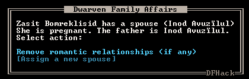

gui/family-affairs¶
This tool provides a user-friendly interface to view romantic relationships, with the ability to add, remove, or otherwise change them at your whim - fantastic for depressed dwarves with a dead spouse (or matchmaking players…).
The target/s must be alive, sane, and in fortress mode.
Usage¶
gui/family-affairs [unitID]Show GUI for the selected unit, or the unit with the specified unit ID.
gui/family-affairs divorce [unitID]Remove all spouse and lover information from the unit and their partner.
gui/family-affairs [unitID] [unitID]Divorce the two specified units and their partners, then arrange for the two units to marry.
Screenshot¶
